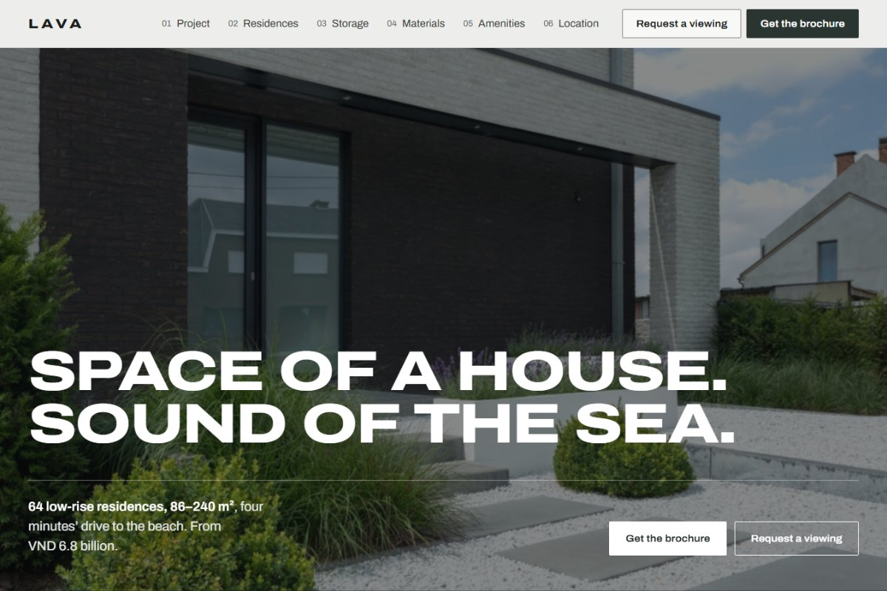
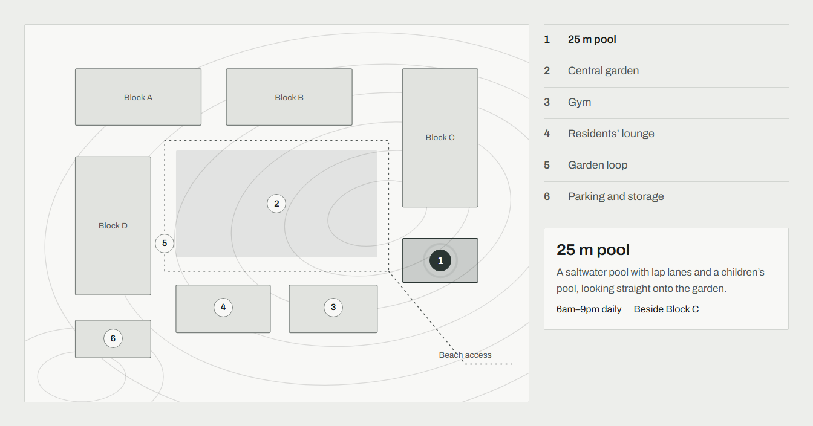
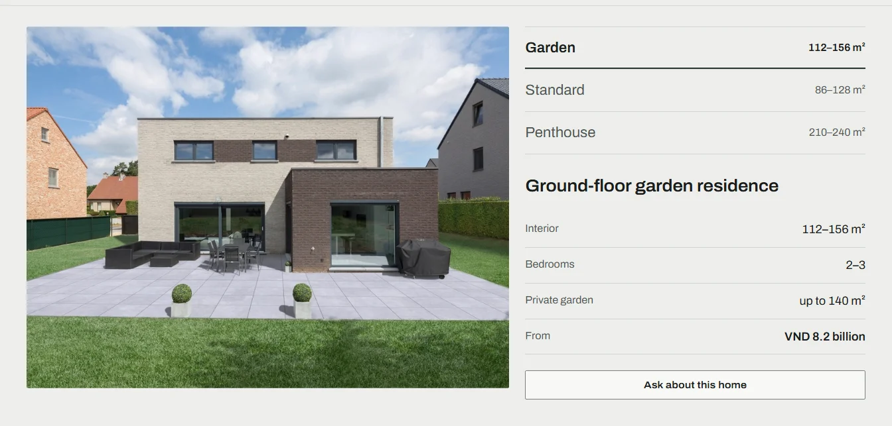

RESIDENTIAL REAL ESTATE · OFF-THE-PLAN SALES
Lava
A residential sales site that answers the questions a buyer asks before registering interest, instead of leading with a brochure download.

Buyers downsizing from a townhouse need proof of space, not a mood board
Lava is a self-initiated concept for an off-the-plan release of 64 low-rise coastal residences. I used an existing Australian residential sales site as a structural reference for chapter rhythm and enquiry flow, then set my own brand, content model and visual system. I owned the information architecture, visual direction, interaction and motion design, and the front-end prototype. The working question: what does someone leaving a townhouse need to see before they trust that a residence is "the size of a home"?
Seven chapters, each answering one buyer question
Residence types open as tabs with interior, bedrooms, outdoor area and a starting price, never a hidden PDF.
Storage, materials and a site plan show what the building takes care of and where everything sits.
Travel times are drawn as bars proportional to minutes, so the beach and the school read at a glance.
Brochure and enquiry are separate paths; "Ask about this home" carries the chosen residence into the form.
The site plan is the decision object, not decoration

Site plan and amenities · Open full-size ↗One selection, two entry points
Plan dots and the list stay in sync; the detail card gives hours and position, so the plan answers "where" and the card answers "when".
Domain grammar from the brand
Basalt colour, 2 px stone-cut corners and contour lines come from the volcanic name; Archivo at wide widths reads like structural drawings.
Motion that explains
Contours draw in, blocks settle, amenities appear in order. Every reveal turns off under reduced-motion and content shows if scripts fail.

Residence selector · Open full-size ↗Specs before storytelling
Each tab swaps the image and a four-row specification, including the starting price, in one view.
Context-carrying enquiry
"Ask about this home" pre-fills the residence type and starts at the first step still missing data, without clearing what was typed.
Honest states
Validation, sending, offline failure with retry and a confirmation summary are built and covered by 27 browser checks.
A complete, testable sales journey for a high-consideration purchase
The prototype covers seven content chapters, a brochure request, a three-step enquiry with a review summary, light and dark themes, and responsive layouts from 320 to 1440 px. Automated rendered checks report no errors across four widths in both themes, and the core flows pass scripted browser tests.
Prices, areas, stock, travel times and consultant details are sample data. Forms do not send to a CRM or inbox. Photography is CC0 stock standing in for developer renders. No buyer research, conversion or sales outcome is claimed.
A reference site can lend structure without lending its look
The reference worked as a map of what buyers need, but its cream-and-terracotta palette and italic serif accents were defaults my design rules rule out. Rebuilding the visual system from the product name gave the site its own identity. The rendered checks also caught issues a static review missed: clipped reveal elements that never triggered and a hidden field that stayed visible.
Evidence details & validation plan
What I owned, chose, traded off — and what is still unknown
Detailed project context, decisions and evidence limits.
UI/UX Designer
Independent project; no separate PM, engineering or stakeholder team.
No developer assets or brand guideline: brand, data and imagery had to be proposed and labelled as samples.
Follow the reference look (cream, terracotta, italic serif) or build a system from the product name. The second was chosen.
Basalt palette, one type family and an interactive site plan as the signature object.
A solid header replaced a transparent one over the hero because white text over bright sky failed contrast; this costs some cinematic effect.
Implementation reality: static HTML/CSS/JS prototype with Playwright flow tests; no backend.
Built on the tokens and components of my uiux-ai-workspace design system, with a project brand layer.
Clip-path reveals never fired because the browser treats a fully clipped box as zero area; fixed by observing the parent element.
PLANNED / NOT MEASURED. Baseline: Needs first usability benchmark.
Run a five-person task test on finding the right residence and starting an enquiry before adding more content.
Success criteria before success claims
≥ 4/5 participants pick a residence that fits a given brief and reach the enquiry summary without navigation recovery. This is a decision threshold for future validation, not a measured outcome.